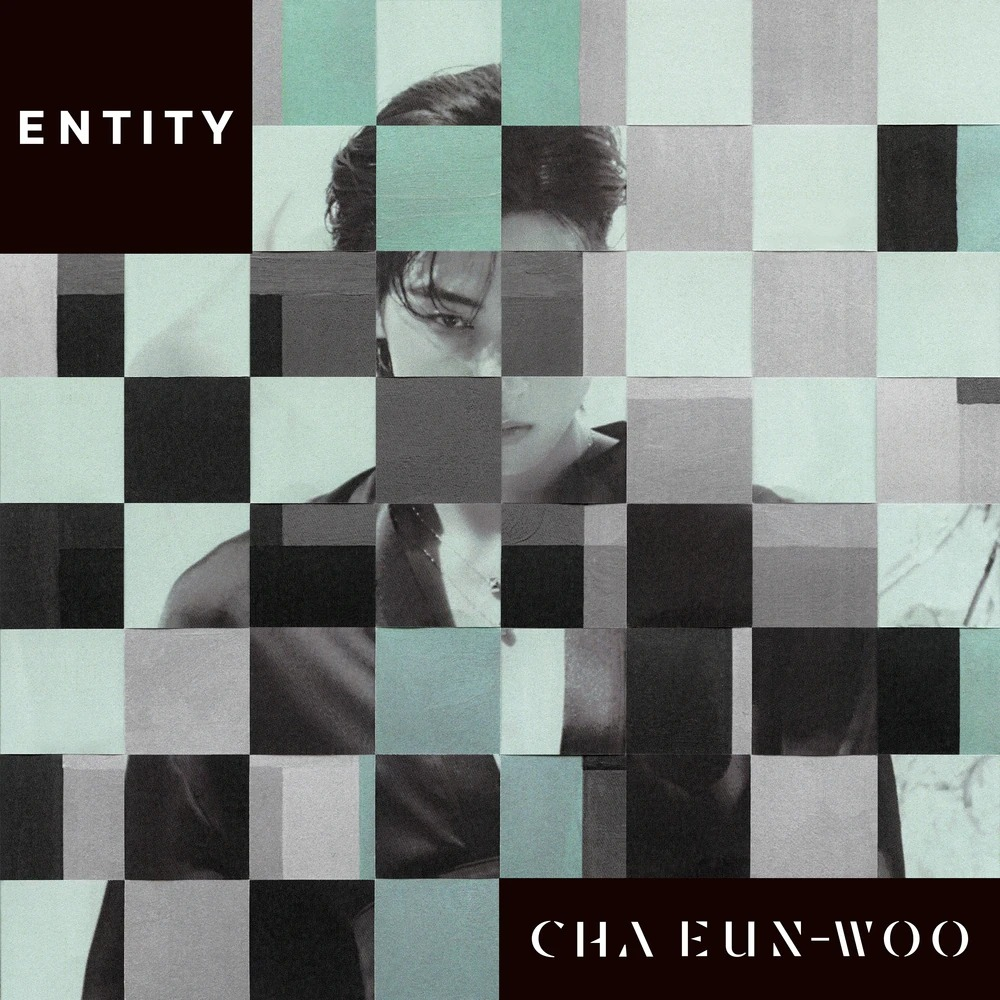
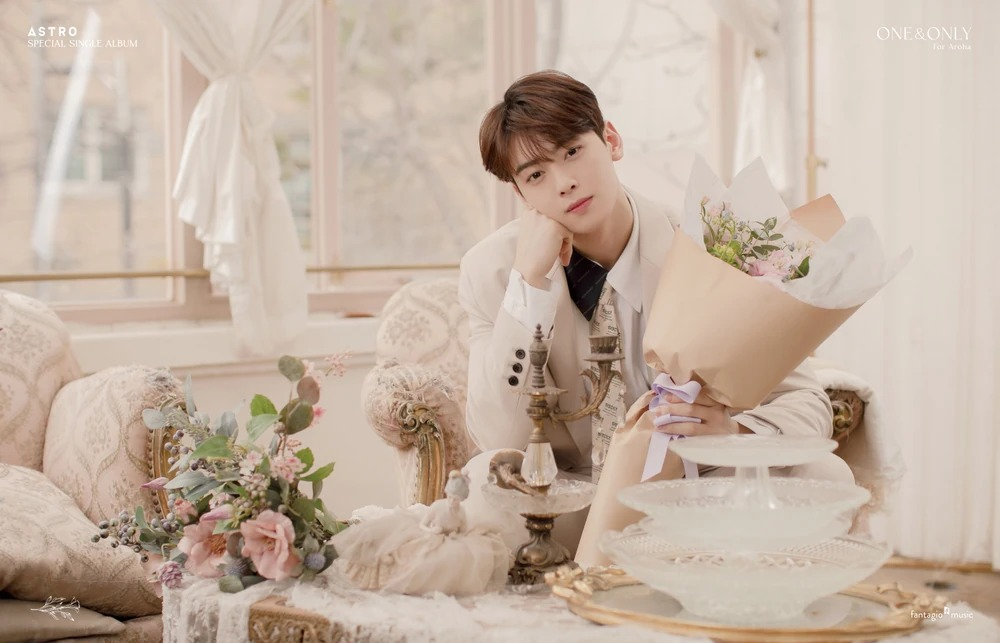
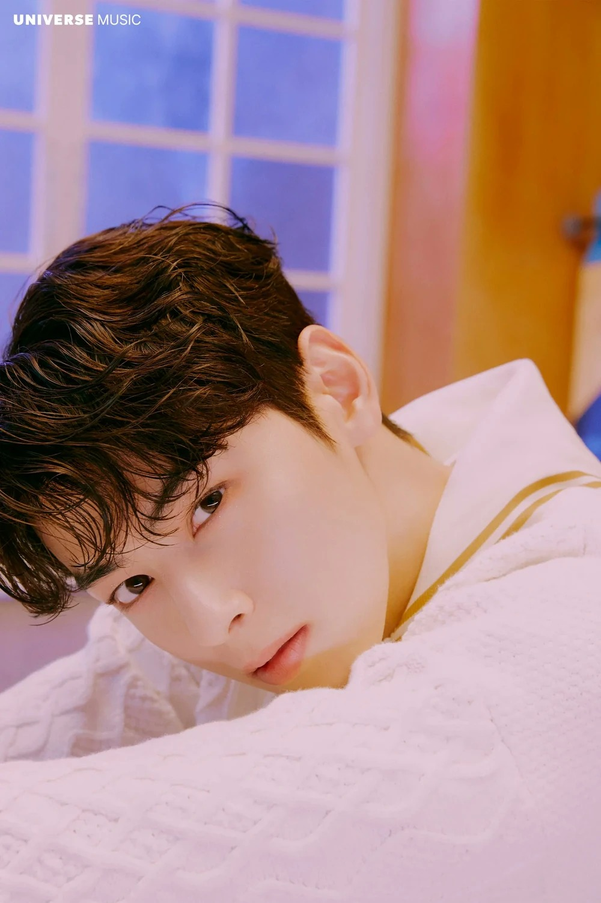
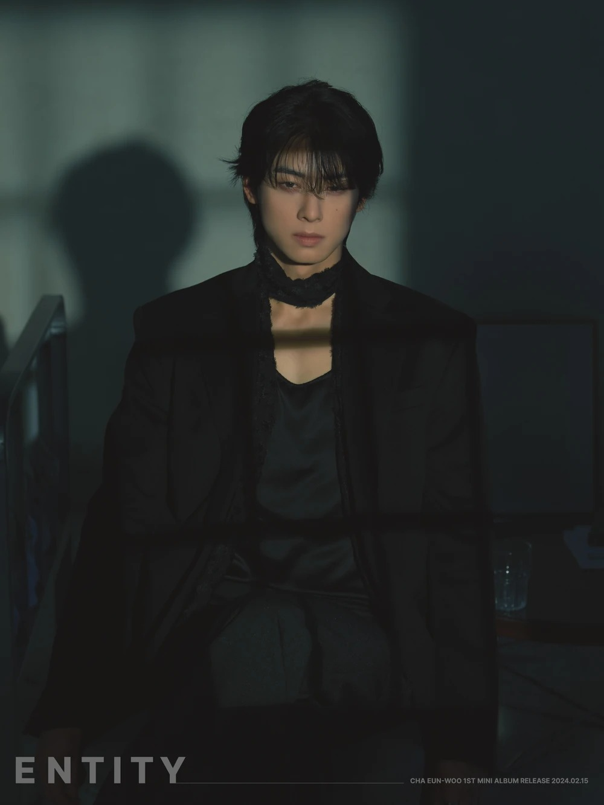
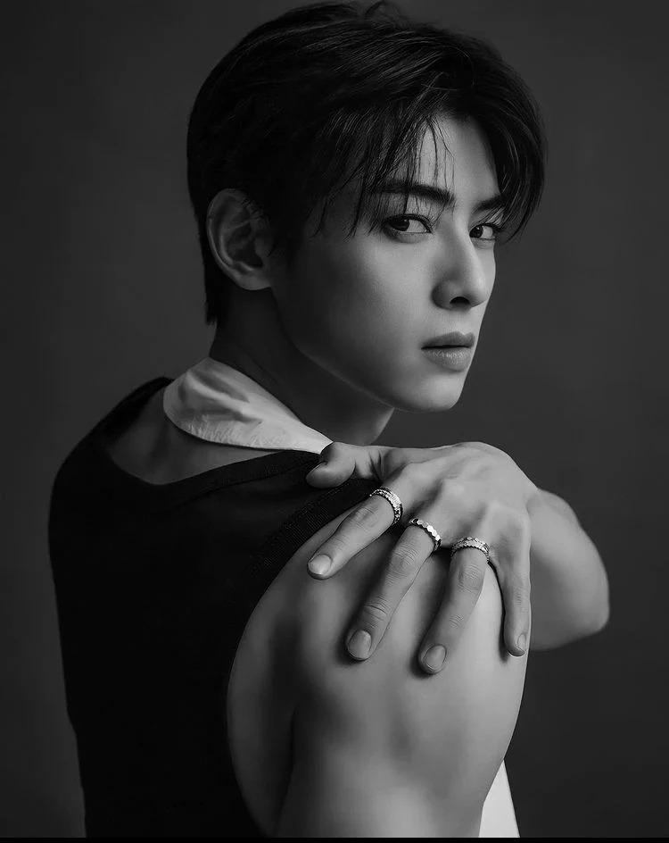

ÁLBUMES:
-
MINIALBUM: ENTITY
- 너와 단둘이 (U&I)
- Fuc*ing great time
- STAY
- WHERE AM I
- You're the best
- Memories (CD ONLY)
-
DIGITAL SINGLE
- Focus on me

K-DRAMAS:
-
- Wonderful World (MBC, 2024)
- A Good Day to Be a Dog (MBC, 2023)
- Island (OCN, 2022)
- True Beauty (tvN, 2020)
- Rookie Historian Goo Hae Ryung (MBC, 2019)
- Soul Plate (KBS Media, 2019)
- Top Management (YouTube Red, 2018)
- My ID is Gangnam Beauty (JTBC, 2018)
- Revenge Note (Oksusu TV, 2017)
- The Best Hit (KBS2, 2017)
- My Romantic Some Recipe (Naver TVCast, 2016)
- To Be Continued (Naver TVCast/MBC Every1, 2015)


CURIOSIDADES:
-
- Grupo K-Pop: ASTRO
- Grupo Proyecto: S.O.U.L
- Idiomas: Coreano (Lengua Materna), Japonés e Inglés (Avanzado)
- Instrumentos: Piano, violín, clarinete, y guitarra.
- Religión: Islam Suní
- Modelo a seguir: Seo Kang Joon
- Fue el cuarto aprendiz en ser revelado en iTeen a través de una foto.

